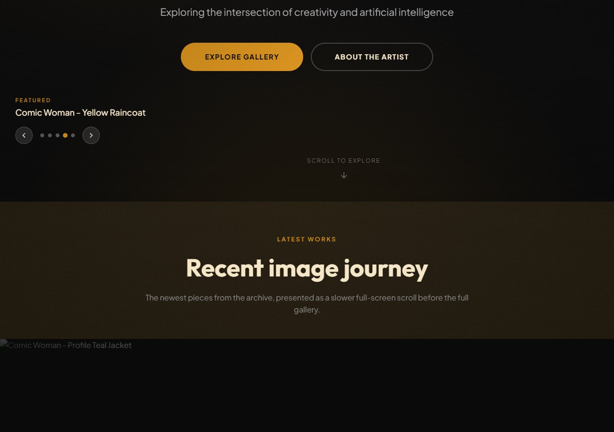

Elusion Works
Company in formation
The umbrella for websites, tools, design experiments, and playable ideas.
A quieter front door for the projects already live, the systems behind them, and the next showcase releases in motion.




01
Showcases
The next wave stays inside Elusion Works before it earns more brands.
No generic tech news clone, no fake social platform, and no scraped gallery. This next layer is built for visual range: design-led microsites, permission-first curation, a tiny remix toy, and clearer notes on how the work gets made.
Static-first
View transitions
Scroll-driven motion
Anchor positioning
Case-study notes
4 launch pieces
Experiments
Motion Poster, Photography Contact Story, Interactive Product Story, and Data Story land as small public demos before they become anything bigger.
- One strong design idea each
- One strong frontend proof each
- Built to show range, not volume
Creative Radar
A public directory format for artists, films, and interactive work we want to point toward without rehosting the work itself.
- Source links first
- Embeds only where allowed
- Takedown route stays visible
Remix Relay
A deliberately small daily prompt and remix chain with no profiles, no feed, no comments, and no attempt to become a full platform.
- Daily challenge rhythm
- Archive-first public output
- Outbound attribution on every post
Design Notes
The case-study layer that explains the point of each demo, the technology behind it, and the external guides worth keeping nearby.
- Why each piece exists
- Which platform ideas it proves
- Guide links for follow-on work
02
Websites
Current websites and public destinations.
03
Tools
Pipelines, systems, and shared tooling.
04
Games
Game concepts and playable experiments.
05
Features